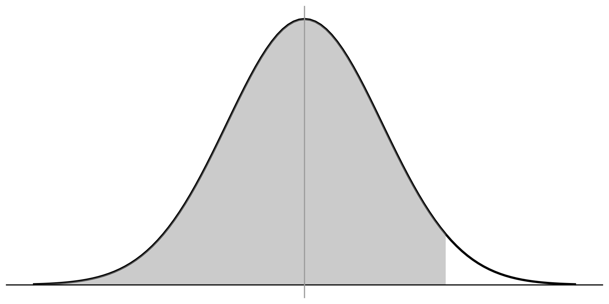
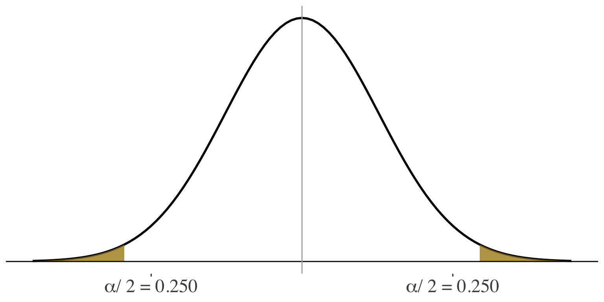

Hypothesis testing for
one and two samples
SOC 221 • Lecture 7
Victoria Sass
Monday, July 15, 2024
Hypothesis testing for one sample
So far:
Estimating an unknown population characteristic based on sample information
\(\bar{X}\) —INFERENCE–> \(\mu_x\)
Sample statistic: The characteristic of the sample that we actually observe (i.e. the mean study time of a SAMPLE of UW students)
For example: draw a random sample of 100 students and observe \(\bar{X} = 14.5\)
Population parameter: The characteristic of the population that we are interested in knowing (i.e. the mean study time of all UW students)
Our goal: Estimate the unknown population parameter \(\mu_x = ?\)
Another way to use our sample information
NOW: Use our sample statistic to test an hypothesis about the population
\[ \bar{X} = 14.5\text{ hours/week study time} \]
Hypothesis:
- A claim about reality (i.e., about how the world works)
- In our examples, the hypothesis is a statement about the reality of a parameter, like the population proportion, \(\pi\), or the population mean, \(\mu\).
Hypothesis testing:
- We compare the known sample statistics to what the hypothesis implies.
- Make a probability statement about how well the sample statistic corresponds with the hypothesis.
- Probability statement = statement about statistical significance
Example: Test of Significance
Say we know that, on average, college students across the country study 13 hrs/week, with a standard deviation of 8.
Question: Do UW students really study more than the national average?
Insufficient time, energy, and money, so draw a random sample of UW students:
N = 100, Mean = 14.5 hrs/week
Looks like UW students study more than the national average.
But there are at least two explanations for this observation. . .
Explanation 1:
- UW students really do study more than 13 hours/week, on average
- In other words, the observed differences between sample mean and the national average reflects a real difference between the population mean for all UW students and the national average
\(\mu{UW} > 13\)
Example: Test of Significance
Say we know that, on average, college students across the country study 13 hrs/week, with a standard deviation of 8.
Question: Do UW students really study more than the national average?
Insufficient time, energy, and money, so draw a random sample of UW students:
N = 100, Mean = 14.5 hrs/week
Looks like UW students study more than the national average.
But there are at least two explanations for this observation. . .
Explanation 2:
- We have drawn an unusual sample of UW students when, in reality, UW students don’t study more than the national average of 13 hours/week
- The difference we observe between the sample mean and the national average is just due to chance sampling error
\(\mu{UW} = 13\)
Question: Do UW students really study more than the national average?
Have to decide between two explanations. . . TWO HYPOTHESES
\(\mu{UW} > 13\)
Explanation 1:
- UW students really do study more than 13 hours/week, on average
- In other words, the observed differences between sample mean and the national average reflects a real difference between the population mean for all UW students and the national average
\(\mu{UW} = 13\)
Explanation 2:
- We have drawn an unusual sample of UW students when, in reality, UW students don’t study more than the national average of 13 hours/week
- The difference we observe between the sample mean and the national average is just due to chance sampling error
ALTERNATIVE HYPOTHESIS (\(H_a\))
States that there IS a real difference in the population (difference not just due to chance)
NULL
HYPOTHESIS: (\(H_0\))
States that there is NO real difference in the population (sample result happened by chance)
\(\mu{UW} > 13\)
Explanation 1:
- UW students really do study more than 13 hours/week, on average
- In other words, the observed differences between sample mean and the national average reflects a real difference between the population mean for all UW students and the national average
\(\mu{UW} = 13\)
Explanation 2:
- We have drawn an unusual sample of UW students when, in reality, UW students don’t study more than the national average of 13 hours/week
- The difference we observe between the sample mean and the national average is just due to chance sampling error
ALTERNATIVE HYPOTHESIS (\(H_a\))
\[\mu{UW} > 13\] (sample result reflects a real difference)
NULL
HYPOTHESIS: (\(H_0\))
\[\mu{UW} = 13\] (sample result just happened by chance)
Key question:
How likely is it that we would observe a sample mean of 14.5 if, in reality, the population of UW students really don’t study more than 13 hours per week?
- Set up a test assuming that the null \(H_0\) is true and see whether the facts of our sample contradict that assumption.
- In other words, if the null hypothesis were true, how likely is it that the sample result just occurred by chance?
If the probability of observing the sample result is low (i.e., sample results are really inconsistent with the null hypothesis) then we REJECT the null hypothesis.
This would SUPPORT the alternative hypothesis.
ALTERNATIVE HYPOTHESIS (\(H_a\))
\[\mu{UW} > 13\] (sample result reflects a real difference)
NULL
HYPOTHESIS: (\(H_0\))
\[\mu{UW} = 13\] (sample result just happened by chance)
Key question:
How likely is it that we would observe a sample mean of 14.5 if, in reality, the population of UW students really don’t study more than 13 hours per week?
- Set up a test assuming that the null \(H_0\) is true and see whether the facts of our sample contradict that assumption.
- In other words, if the null hypothesis were true, how likely is it that the sample result just occurred by chance?
If, on the other hand, the probability of observing the sample result is too high (i.e., sample results are somewhat consistent with the null hypothesis) then we FAIL TO REJECT the null hypothesis.
This would FAIL TO SUPPORT the alternative hypothesis.
ALTERNATIVE HYPOTHESIS (\(H_a\))
\[\mu{UW} > 13\] (sample result reflects a real difference)
NULL
HYPOTHESIS: (\(H_0\))
\[\mu{UW} = 13\] (sample result just happened by chance)
Key question:
How likely is it that we would observe a sample mean of 14.5 if, in reality, the population of UW students really don’t study more than 13 hours per week?
- Set up a test assuming that the null \(H_0\) is true and see whether the facts of our sample contradict that assumption.
- In other words, if the null hypothesis were true, how likely is it that the sample result just occurred by chance?
- Our key question requires us to make a PROBABILITY STATEMENT about the sample.
- So, think about the probability distribution from which the sample comes.
- Probability distribution of all possible sample results is the SAMPLING DISTRIBUTION.
ALTERNATIVE HYPOTHESIS (\(H_a\))
\[\mu{UW} > 13\] (sample result reflects a real difference)
NULL
HYPOTHESIS: (\(H_0\))
\[\mu{UW} = 13\] (sample result just happened by chance)
If the null hypothesis were true, what would the sampling distribution look like?
- Central Limit theorem tells us:
- Sampling distribution is NORMAL
- \(\mu_{\bar{X}} = \mu_X\)
- \(\sigma_{\bar{X}} = \frac{\sigma}{\sqrt{n}}\)
ALTERNATIVE HYPOTHESIS (\(H_a\))
\[\mu{UW} > 13\] (sample result reflects a real difference)
NULL
HYPOTHESIS: (\(H_0\))
\[\mu{UW} = 13\] (sample result just happened by chance)
If the null hypothesis were true, what would the sampling distribution look like?
- Central Limit theorem tells us:
- Sampling distribution is NORMAL
- \(\mu_{\bar{X}} = \mu_X\)
- \(\sigma_{\bar{X}} = \frac{\sigma}{\sqrt{n}}\)
\(\mu_{\bar{X}_{UW}} = \mu_{UW} = 13\)
\(\sigma_{\bar{X}} = \frac{\sigma}{\sqrt{n}} = \frac{8.0}{\sqrt{100}}\)
ALTERNATIVE HYPOTHESIS (\(H_a\))
\[\mu{UW} > 13\] (sample result reflects a real difference)
NULL
HYPOTHESIS: (\(H_0\))
\[\mu{UW} = 13\] (sample result just happened by chance)
Key question
How likely is it that we would observe a sample mean of 14.5 if, in reality, the population of UW students really don’t study more than 13 hours per week?
Think about where our ONE SINGLE sample falls in this distribution.
14.5 is out on this side of the distribution, but how far?
We need to convert our score to a z-score
\(\sigma_{\bar{X}} = 0.8\)
\(z = \frac{\bar{X} - \mu_{0}}{\sigma_{\bar{X}}}\)
\(= \frac{14.5 - 13}{0.8} = 1.875\)

\(\mu_{\bar{X}_{UW}} = \mu_{UW} = 13\)
14.5 is 1.875 standard errors away from what we assume under the null hypothesis
ALTERNATIVE HYPOTHESIS (\(H_a\))
\[\mu{UW} > 13\] (sample result reflects a real difference)
NULL
HYPOTHESIS: (\(H_0\))
\[\mu{UW} = 13\] (sample result just happened by chance)
Key question
How likely is it that we would observe a sample mean of 14.5 if, in reality, the population of UW students really don’t study more than 13 hours per week?
What is the probability of randomly selecting a case that is 1.875 standard deviations above the mean of a normal distribution?
We need to find the
probability associated
with a z-score of 1.875
in the standard
normal table

\(\mu_{\bar{X}_{UW}} = \mu_{UW} = 13\)
14.5 is 1.875 standard errors away from what we assume under the null hypothesis
ALTERNATIVE HYPOTHESIS (\(H_a\))
\[\mu{UW} > 13\] (sample result reflects a real difference)
NULL
HYPOTHESIS: (\(H_0\))
\[\mu{UW} = 13\] (sample result just happened by chance)
Key question
How likely is it that we would observe a sample mean of 14.5 if, in reality, the population of UW students really don’t study more than 13 hours per week?
What is the probability of randomly selecting a case that is 1.875 standard deviations above the mean of a normal distribution?
The proportion of cases
below z of 1.875
is 0.9696

\(\mu_{\bar{X}_{UW}} = \mu_{UW} = 13\)
ALTERNATIVE HYPOTHESIS (\(H_a\))
\[\mu{UW} > 13\] (sample result reflects a real difference)
NULL
HYPOTHESIS: (\(H_0\))
\[\mu{UW} = 13\] (sample result just happened by chance)
Key question
How likely is it that we would observe a sample mean of 14.5 if, in reality, the population of UW students really don’t study more than 13 hours per week?
What is the probability of randomly selecting a case that is 1.875 standard deviations above the mean of a normal distribution?
The proportion of cases
below z of 1.875
is 0.9696
\(\mu_{\bar{X}_{UW}} = \mu_{UW} = 13\)
Probability of observing a case from this part is \(1 -.9696 =.0304\)
ALTERNATIVE HYPOTHESIS (\(H_a\))
\[\mu{UW} > 13\] (sample result reflects a real difference)
NULL
HYPOTHESIS: (\(H_0\))
\[\mu{UW} = 13\] (sample result just happened by chance)
Key question
How likely is it that we would observe a sample mean of 14.5 if, in reality, the population of UW students really don’t study more than 13 hours per week?
So, the probability of randomly selecting a sample with a mean as large as 14.5 from a population with a mean of 13 is only 0.0304
The proportion of cases
below z of 1.875
is 0.9696
\(\mu_{\bar{X}_{UW}} = \mu_{UW} = 13\)
Probability of observing a case from this part is \(1 -.9696 =.0304\)
ALTERNATIVE HYPOTHESIS (\(H_a\))
\[\mu{UW} > 13\] (sample result reflects a real difference)
NULL
HYPOTHESIS: (\(H_0\))
\[\mu{UW} = 13\] (sample result just happened by chance)
Key question
How likely is it that we would observe a sample mean of 14.5 if, in reality, the population of UW students really don’t study more than 13 hours per week?
So, the probability of randomly selecting a sample with a mean as large as 14.5 from a population with a mean of 13 is only 0.0304
P-VALUE: The probability of observing the sample result if the null hypothesis were actually true.
i.e., the probability that the null hypothesis is true, given our sample results
ALTERNATIVE HYPOTHESIS (\(H_a\))
\[\mu{UW} > 13\] (sample result reflects a real difference)
NULL
HYPOTHESIS: (\(H_0\))
\[\mu{UW} = 13\] (sample result just happened by chance)
Key question
How likely is it that we would observe a sample mean of 14.5 if, in reality, the population of UW students really don’t study more than 13 hours per week?
So, the probability of randomly selecting a sample with a mean as large as 14.5 from a population with a mean of 13 is only 0.0304
Since the P-VALUE is small (the sample result is unlikely to have occurred if the null hypothesis were actually true we
REJECT THE NULL HYPOTHESIS
SUPPORT THE ALTERNATIVE HYPOTHESIS
ALTERNATIVE HYPOTHESIS (\(H_a\))
\[\mu{UW} > 13\] (sample result reflects a real difference)
NULL
HYPOTHESIS: (\(H_0\))
\[\mu{UW} = 13\] (sample result just happened by chance)
Key question
How likely is it that we would observe a sample mean of 14.5 if, in reality, the population of UW students really don’t study more than 13 hours per week?
- When we reject the null hypothesis we say that the sample result is statistically significant
- statistically unlikely to have occurred just by chance
- Likely represents a real difference in the population
SUPPORT THE ALTERNATIVE HYPOTHESIS
P-VALUE: The probability of observing the sample result if the null hypothesis were actually true.
When the P-VALUE is small we:
REJECT THE NULL HYPOTHESIS,
SUPPORT THE ALTERNATIVE HYPOTHESIS
and say that the result is
STATISTICALLY SIGNIFICANT
Question: How small does the P-value have to be before we reject the null hypothesis?
Answer: We decide on that standard before our test by setting the ALPHA LEVEL (\(\alpha\)) for the test
ALPHA \((\alpha)\): The probability threshold at which we are willing to reject the null hypothesis.
\(\text{p-value} \lt \alpha\)
we REJECT THE NULL HYPOTHESIS,
SUPPORT THE ALTERNATIVE HYPOTHESIS
and say that the result is
STATISTICALLY SIGNIFICANT
Standard choices for \(\alpha\):
0.05
0.01
0.001
ALPHA \((\alpha)\): The probability threshold at which we are willing to reject the null hypothesis.
\(\text{p-value} \lt \alpha\)
we REJECT THE NULL HYPOTHESIS,
SUPPORT THE ALTERNATIVE HYPOTHESIS
and say that the result is
STATISTICALLY SIGNIFICANT
Standard choices for \(\alpha\):
0.05
0.01
0.001
Not willing to reject the null hypothesis unless there is less than a 5% chance that the sample result (difference) appeared just because of random sampling error.
Even with these high standards, we never call this proof because another sample may lead to a different decision.
So we NEVER ACCEPT AN HYPOTHESIS!
(can only reject or retain / support or fail to support)
Important notes on results of hypothesis tests
- Never accept or prove an hypothesis
- Your decision reflects just the evidence available in the current sample
- A new sample may produce a different result and the accepted or proven hypothesis may be wrong
- Statistically significant results can happen by chance
- \(\text{p-value} = 0.05\) means that there is a \(5\%\) chance of claiming statistical significance for a non-existent difference
- Statistically significant \(\ne\) substantively significant
- Tiny real-world differences can be statistically significant, especially with high power (big samples)
- Important differences can look statistically non-significant, especially with low power (small samples)
Another example
The university tells us that the average student on campus consumes 2 drinks per week with a standard deviation of 1.9. They have asked us to determine whether students living in the Greek system are different from the university average in terms of average number of drinks per week.
Draw a random sample of students from Greek system:
\(n = 150\), Mean = \(2.3\) drinks/week
Steps for Hypothesis / Significance Tests
- Step 1: Plan
- State the null and alternative hypotheses
- Choose your alpha level and find the critical value
- Step 2: Calculate
- Calculate test statistic (and p-value)
- Step 3: Make a decision
- Reject \(H_0\) and support \(H_a\) if
- p-value < alpha
- Test statistic more extreme than critical value
- Fail to reject \(H_0\) and fail to support \(H_a\) if
- p-value > alpha
- Test statistic less extreme than critical value
- Reject \(H_0\) and support \(H_a\) if
Step 1: Plan
State the null and alternative hypotheses
The university tells us that the average student on campus consumes 2 drinks per week with a standard deviation of 1.9. They have asked us to determine whether students living in the Greek system are different from the university average in terms of average number of drinks per week.
Draw a random sample of students from Greek system:
\(n = 150\), Mean = \(2.3\) drinks/week
NULL HYPOTHESIS:
ALTERNATIVE
HYPOTHESIS:
\[ \mu_{greek} = 2 \]
\[ \mu_{greek} \ne 2 \]
Set up a test assuming that the null \(H_0\) is true and see whether the facts of our sample contradict that assumption.
Stated in terms of unknown population parameters
This is a TWO-SIDED (non-directional) hypothesis
One-sided versus two-sided
A ONE-SIDED test is one in which we are interested if the unknown population parameter is HIGHER or LOWER than the value assumed under the null hypothesis
Example: Do women have a higher level of emotional intelligence than do men?
Reject null hypothesis if the test result is different enough from the null in the right direction
A TWO-SIDED test is one in which we are interested if the unknown population parameter is just DIFFERENT from the value assumed under the null hypothesis
Example: Are men and women different in terms of emotional intelligence?
Reject null hypothesis if the test result is EITHER much higher OR much lower than what we assume under the null
One-sided versus two-sided
A ONE-SIDED test is one in which we are interested if the unknown population parameter is HIGHER or LOWER than the value assumed under the null hypothesis
Only one side contains strong results consistent with our research hypothesis
A TWO-SIDED test is one in which we are interested if the unknown population parameter is just DIFFERENT from the value assumed under the null hypothesis
Both of these areas contain strong results consistent with our research hypothesis
One-sided versus two-sided
A ONE-SIDED test is one in which we are interested if the unknown population parameter is HIGHER or LOWER than the value assumed under the null hypothesis
A TWO-SIDED test is one in which we are interested if the unknown population parameter is just DIFFERENT from the value assumed under the null hypothesis
Same null hypothesis (that there is no difference) contradicts both one- and two-sided alternative hypotheses.
Structure of hypothesis determines the critical value
Critical value: The minimum value at which the test statistic would lead you to reject the null hypothesis
- Values that are more extreme than the critical value are so unlikely under the null hypothesis (have such low p-values) that they lead you to believe that the null hypothesis is not true.
- Critical value determined by the alpha level and the structure of the hypothesis (one- or two-sided)
Normal
distribution
\(\alpha = 0.05\)
\(H_a: \mu \lt 0\)
Critical value of
\(z = -1.65\)
\(H_a: \mu \ne 0\)
Critical value of
\(z = \pm 1.96\)
Step 1: Plan
Choose your alpha level and find the critical value
The university tells us that the average student on campus consumes 2 drinks per week with a standard deviation of 1.9. They have asked us to determine whether students living in the Greek system are different from the university average in terms of average number of drinks per week.
Draw a random sample of students from Greek system:
\(n = 150\), Mean = \(2.3\) drinks/week
\[ H_0: \mu_{greek} = 2 \]
\[ H_a: \mu_{greek} \ne 2 \]

This is a TWO-SIDED (non-directional) hypothesis
Normal
distribution
\(\alpha = 0.05\)
So our sample result has to be at least 1.96 standard errors away from what is assumed under \(H_0\) for us to reject \(H_0\)
\(H_a: \mu \ne 0\)
Critical value of
\(z = \pm 1.96\)
Step 2: Calculate
Calculate test statistic (and p-value)
The university tells us that the average student on campus consumes 2 drinks per week with a standard deviation of 1.9. They have asked us to determine whether students living in the Greek system are different from the university average in terms of average number of drinks per week.
Draw a random sample of students from Greek system:
\(n = 150\), Mean = \(2.3\) drinks/week
\[ H_0: \mu_{greek} = 2 \]
\[ H_a: \mu_{greek} \ne 2 \]
Figuring out how far the sample result is fom \(H_0\) and putting it in standard-error units
\[ \sigma_{\bar{X}} = \frac{\sigma}{\sqrt{n}} = \frac{1.9}{\sqrt{150}} = 0.155 \]
\(z\) \(= \frac{\bar{X} - \mu_0}{\sigma_{\bar{X}}}\)
\(\frac{2.3-2}{0.155} =\) \(1.94\)
So, the average number of drinks for the Greeks is \(1.94\) standard errors above what we assume under \(H_0\)
Step 3: Make a decision
Fail to reject \(H_0\) and fail to support \(H_a\)
The university tells us that the average student on campus consumes 2 drinks per week with a standard deviation of 1.9. They have asked us to determine whether students living in the Greek system are different from the university average in terms of average number of drinks per week.
Draw a random sample of students from Greek system:
\(n = 150\), Mean = \(2.3\) drinks/week
\[ H_0: \mu_{greek} = 2 \]
\[ H_a: \mu_{greek} \ne 2 \]
Since our test statistic (\(1.94\)) is less extreme than the critical value (\(1.96\)) we
FAIL TO REJECT \(H_0\)
- Not enough evidence to say that Greeks drink more than other students
- Observed difference is NOT statistically significant (may have just occurred by chance)
Practice
You are interested in knowing whether immigrants (US residents born outside of the country) are different from the US population as a whole in terms of educational attainment. You draw a random sample of 225 adult immigrants and find that their average level of education is 13.3 years. Compare this to the statistics for the population of American adults which has an average education of 12.75 with a standard deviation of 4 years. Use a .05 alpha level to test the statistical significance of the observed difference.
- Step 1: Plan
- State the null and alternative hypotheses
- Choose your alpha level and find the critical value
- Step 2: Calculate
- Calculate test statistic (and p-value)
- Step 3: Make a decision
- Reject \(H_0\) and support \(H_a\) if
- p-value < alpha
- Test statistic more extreme than critical value
- Fail to reject \(H_0\) and fail to support \(H_a\) if
- p-value > alpha
- Test statistic less extreme than critical value
- Reject \(H_0\) and support \(H_a\) if
Step 1: Plan
State the null and alternative hypotheses
You are interested in knowing whether immigrants (US residents born outside of the country) are different from the US population as a whole in terms of educational attainment. You draw a random sample of 225 adult immigrants and find that their average level of education is 13.3 years. Compare this to the statistics for the population of American adults which has an average education of 12.75 with a standard deviation of 4 years. Use a .05 alpha level to test the statistical significance of the observed difference.
\[ H_0: \mu_{immig} = 12.75 \]
\[ H_a: \mu_{immig} \ne 12.75 \]
Set up a test assuming that the null \(H_0\) is true and see whether the facts of our sample contradict that assumption
Step 1: Plan
Choose your alpha level and find the critical value
You are interested in knowing whether immigrants (US residents born outside of the country) are different from the US population as a whole in terms of educational attainment. You draw a random sample of 225 adult immigrants and find that their average level of education is 13.3 years. Compare this to the statistics for the population of American adults which has an average education of 12.75 with a standard deviation of 4 years. Use a .05 alpha level to test the statistical significance of the observed difference.
\[ H_0: \mu_{immig} = 12.75 \]
\[ H_a: \mu_{immig} \ne 12.75 \]

Normal
distribution
\(\alpha = 0.05\)
So our sample result has to be at least 1.96 standard errors away from what is assumed under \(H_0\) for us to reject \(H_0\)
\(H_a: \mu \ne 0\)
Critical value of
\(z = \pm 1.96\)
Step 2: Calculate
Calculate test statistic (and p-value)
You are interested in knowing whether immigrants (US residents born outside of the country) are different from the US population as a whole in terms of educational attainment. You draw a random sample of 225 adult immigrants and find that their average level of education is 13.3 years. Compare this to the statistics for the population of American adults which has an average education of 12.75 with a standard deviation of 4 years. Use a .05 alpha level to test the statistical significance of the observed difference.
\[ H_0: \mu_{immig} = 12.75 \]
\[ H_a: \mu_{immig} \ne 12.75 \]
Figuring out how far the sample result is from \(H_0\) and putting it in standard-error units
\[ \sigma_{\bar{X}} = \frac{\sigma}{\sqrt{n}} = \frac{4}{\sqrt{225}} = 0.267 \]
\(z\) \(= \frac{\bar{X} - \mu_0}{\sigma_{\bar{X}}}\)
\(\frac{13.3-12.75}{0.267} =\) \(2.060\)
Mean education for immigrants is 2.06 standard errors above the national average (assumed under \(H_0\))
Step 3: Make a decision
Reject \(H_0\) and support \(H_a\)
You are interested in knowing whether immigrants (US residents born outside of the country) are different from the US population as a whole in terms of educational attainment. You draw a random sample of 225 adult immigrants and find that their average level of education is 13.3 years. Compare this to the statistics for the population of American adults which has an average education of 12.75 with a standard deviation of 4 years. Use a .05 alpha level to test the statistical significance of the observed difference.
\[ H_0: \mu_{immig} = 12.75 \]
\[ H_a: \mu_{immig} \ne 12.75 \]
- Based on this evidence, it appears that the population of immigrants have, on average, more education than the national average.
- The observed difference IS statistically significant
Since our test statistic (2.06) is more extreme than the critical value (1.96) we
REJECT \(H_0\), FIND EVIDENCE TO SUPPORT \(H_A\)
Break!
t-distribution
Inference with the t-distribution
Why use something other than the normal (z) distribution?
TYPES OF INFERENCE SO FAR:
Confidence intervals: Assume our sample
of 100 UW students comes from a population with a standard deviation of 8.0, estimate the population mean…
Hypothesis testing: Say we know that the average study time for the population of college students in the country is 13 hrs/week, with a standard deviation of 8.0. Do UW students really study more than the national average?
These types of examples are UNREALISTIC (or at least really rare) because we rarely know the population standard deviation.
\[ \sigma_{\bar{X}} = \frac{\sigma}{\sqrt{n}} \]
\[ s_{\bar{X}} = \frac{s}{\sqrt{n}} \]
When the population standard deviation is unknown, use the SAMPLE standard deviation to estimate the standard error used in inferences.
Confidence intervals: You draw a sample of 100 UW students and find that the average study time is 14.5 hours/week with a sample standard deviation of 8.25, estimate the population mean.
Hypothesis testing: You draw a sample of 100 UW students and find that the average study time is 14.5 hours/week with a sample standard deviation of 8.25. Test the hypothesis that UW students study more than the national average of 13 hours/week.
MORE REALISTICS EXAMPLES:
PROBLEM: Using sample statistics to make
two difference inferences
\(s_x \Rightarrow \sigma_x\)
\(\bar{X} \Rightarrow \mu_x\)
= INCREASED UNCERTAINTY
This is especially problematic when the sample size is small!
Inference with the t-distribution
Why use something other than the normal (z) distribution?
Account for the extra uncertainty by assuming that the sampling distribution follows a t-distribution instead of a normal (z) distribution.
Using the t-distribution tends to give more conservative inferences (e.g., wider confidence intervals, more extreme critical values)
Correction is most dramatic when the sample size is small
Inference with the t-distribution
What is the t-distribution?
- t-distribution is a family of distributions (several different shapes)
- t-distribution is similar to Normal
- Symmetric
- Single peak
- Centered on a mean/median/mode of 0
- Symmetric
- t-distribution is different from Normal in that it tends to
- be flatter
- be more spread out
- have a higher proportion of cases out on the tails
How different t is from Normal depends on the degrees of freedom
Inference with the t-distribution
Degrees of freedom (df)
The number of scores that are free to vary in the calculation of a statistic
Example
Q: If a sample of \(n = 5\) has a mean of 3, how many scores are free to vary?
___ + ___ + ___ + ___ + ___ = 15
2
1
7
2
A: \(n-1=4\)
Once you know the first four numbers, there is only one value that the fifth could take to produce a mean of \(3\).
df for calculation of a mean = \(n-1\)
Inference with the t-distribution

| t-distribution | critical value |
|---|---|
| df = 3 | \(\pm3.182\) |
| df = 30 | \(\pm2.042\) |
| df = 100 | \(\pm1.984\) |
| df = 1000 | \(\pm1.962\) |
Notice: Tests with the t-distribution are more conservative (wider confidence intervals, harder to reject H0) than with normal (critical value: \(\pm1.960\)) and results are especially conservative when the sample size (df) is small.
More realistic example
Estimation: Confidence interval
You draw a sample of 100 UW students and find that the average study time is 14.5 hours/week with a sample standard deviation of 8.25. Estimate the population mean.
\[ \text{Confidence interval} = \]
\[ \bar{X} \pm t(\frac{s_x}{\sqrt{n}}) \]
\[ \text{95% C.I.} = 14.5 \pm 1.984(0.825) \] \[ \text{ } = 14.5 \pm 1.6368 \]
- Population standard deviation is unknown
- Use the sample standard deviation to estimate the standard error
\[ s_\bar{X} = \frac{s_x}{\sqrt{n}} = \frac{8.25}{\sqrt{100}} = 0.825 \]
- Use the t-distribution1 with \(df = n - 1\)
\(df = 100 - 1 = 99\)
We are 95% confident that the average number of hours studied for the population of UW students is between 12.86 to 16.14 hours
More realistic example
Hypothesis testing
You draw a sample of 100 UW students and find that the average study time is 14.5 hours/week with a sample standard deviation of 8.25. Test the hypothesis that UW students study more than the national average of 13 hours/week.
\(H_0: \mu_{UW} = 13\) \(H_a: \mu_{UW} \gt 13\)
Critical value of t?
Population standard deviation is unknown
Use the sample standard deviation to estimate the standard error
\[ s_\bar{X} = \frac{s_x}{\sqrt{n}} = \frac{8.25}{\sqrt{100}} = 0.825 \]
- Use the t-distribution1 with \(df = n - 1\)
\(df = 100 - 1 = 99\)
More realistic example
Hypothesis testing
You draw a sample of 100 UW students and find that the average study time is 14.5 hours/week with a sample standard deviation of 8.25. Test the hypothesis that UW students study more than the national average of 13 hours/week.
\(H_0: \mu_{UW} = 13\) \(H_a: \mu_{UW} \gt 13\)
Critical value of t = 1.660
Test statistic from the sample:
\(t = \frac{\bar{X}-\mu_0}{s_\bar{X}} = \frac{14.5 - 13}{0.825} =\) \(1.818\)
Population standard deviation is unknown
Use the sample standard deviation to estimate the standard error
\[ s_\bar{X} = \frac{s_x}{\sqrt{n}} = \frac{8.25}{\sqrt{100}} = 0.825 \]
- Use the t-distribution1 with \(df = n - 1\)
\(df = 100 - 1 = 99\)
Since obtained t is more extreme than critical value, reject \(H_0\) and support the claim that the population of UW students really do study more than the national average.
Practice
Estimation: Confidence interval
In a random sample of 121 UW students, the mean number of visits to family in the past six months was 5.5 with a standard deviation of 0.9. Calculate a 90% confidence interval for the average number of visits in the population.
STEPS:
- Decide on a confidence level and corresponding t-score
- Calculate the standard error (using sample standard deviation)
- Calculate the margin of error
- Calculate the confidence interval
- Interpret the results
Hypothesis test
You want to know whether high school students are different than the national average (µ=220) in terms of the number of Facebook friends. A random sample of 30 high school students shows a mean number of Facebook friends of 245 with a standard deviation of 90. Is this difference from the national average statistically significant at the .01 level?
STEPS:
1a. State the null and alternative hypotheses
1b. Choose your alpha level and find the critical value
2. Calculate the test statistic (t-score) and p-value
3. Make a decision (Reject or fail to reject the null hypothesis (\(H_0\)) and support or fail to support the alternative hypothesis \(H_a\))
Hypothesis testing for two samples
Where are we?
- Inference: Drawing conclusions about populations based on information drawn from samples
- Inferences so far:
- Confidence intervals to estimate a population mean or proportion based on the results from a SINGLE SAMPLE
- Hypothesis tests / tests of significance for a SINGLE SAMPLE:
- Comparing our SINGLE SAMPLE result to some known benchmark
- With and without knowing the standard deviation of the population of interest
- NOW: drawing conclusions about the difference between TWO unknown populations based on information from TWO samples
- Comparing our SINGLE SAMPLE result to some known benchmark
Two-sample hypothesis test
Step 1a: State the null and alternative hypotheses
We want to know if UW students differ from WSU students in terms of average study time. We draw a random sample of 100 UW students and find an average study time of 14.5 hours per week with a standard deviation of 8.25. In contrast, our random sample of 81 WSU students has an average study time of 12.5 hours per week with a standard deviation of 7.0. Use a .05 alpha level to test the statistical significance of the observed difference between means.
\(H_0: \mu_{UW} = \mu_{WSU}\)
\(H_a: \mu_{UW} \ne \mu_{WSU}\)
\(H_0: \mu_{UW} - \mu_{WSU} = 0\)
\(H_a: \mu_{UW} - \mu_{WSU} \ne 0\)
Observed difference between sample means reflects chance sampling error.
Observed difference b/w sample means reflects a real difference b/w population means
Two-sample hypothesis test
Other possible hypotheses
Two-sided
Question just asks about any difference
\(H_a: \mu_{1} \ne \mu_{2}\)
↓
\(H_a: \mu_{1} - \mu_{2} \ne 0\)
One-sided
Question implies a direction of difference
\(H_a: \mu_{1} \gt \mu_{2}\)
↓
\(H_a: \mu_{1} - \mu_{2} \gt 0\)
\(H_a: \mu_{1} \lt \mu_{2}\)
↓
\(H_a: \mu_{1} - \mu_{2} \lt 0\)
Can restate any in terms of differences between population means
Note: all of these hypothesize a real difference between population means
All are contradicted by the same null hypothesis
\(H_0: \mu_{1} = \mu_{2}\) → \(H_0: \mu_{1} - \mu_{2} = 0\)
Two-sample hypothesis test
Step 1a: State the null and alternative hypotheses
We want to know if UW students differ from WSU students in terms of average study time. We draw a random sample of 100 UW students and find an average study time of 14.5 hours per week with a standard deviation of 8.25. In contrast, our random sample of 81 WSU students has an average study time of 12.5 hours per week with a standard deviation of 7.0. Use a .05 alpha level to test the statistical significance of the observed difference between means.
\(H_0: \mu_{UW} - \mu_{WSU} = 0\) \(H_a: \mu_{UW} - \mu_{WSU} \ne 0\)
- Set up a test assuming that the null (\(H_0\)) is true and see whether the facts of our samples contradict that assumption.
- Key question: How likely is it that we would observe a sample difference this big
(\(14.5-12.5 = 2 \text{ hrs}\)) if the null (\(H_0\)) were true?- If very unlikely, we will reject \(H_0\) and support \(H_a\)
- If not very unlikely, we will fail to reject \(H_0\)
- Have to think about probability of receiving our sample result (difference) if \(H_0\) were true
- Have to think about the SAMPLING DISTRIBUTION of all possible sample results
Sampling theory
Hypothesis test for difference between means
Sampling Distribution for the difference between means
A theoretical probability distribution that would be obtained by calculating all of the possible mean differences (\(\bar{X_1}-\bar{X_2}\)) for all possible pairs of random, independent samples of size \(n_1\) and \(n_2\) drawn from two populations.
The DIFFERENCES between sample means drawn from every possible PAIR of samples create a SAMPLING DISTRIBUTION OF DIFFERENCES BETWEEN (SAMPLE) MEANS
- \(\bar{X}_{UW1} - \bar{X}_{WSU1} = \bar{X}_{diff1}\)
- \(\bar{X}_{UW2} - \bar{X}_{WSU2} = \bar{X}_{diff2}\)
- \(\bar{X}_{UW3} - \bar{X}_{WSU3} = \bar{X}_{diff3}\)
- . . .
Sampling theory
Hypothesis test for difference between means
Characteristics of the Sampling Distribution for Difference between Two Means:
- IF the random samples are independently drawn AND the sample sizes are large
(\(n_1 + n_2 > 100\)) then: - The sampling distribution of differences between means would be NORMAL
- (but use the t-distribution when population standard deviations are unknown)
- The MEAN of this distribution would equal the real difference between the population means
\(\mu_{\bar{X_1} - \bar{X_2}} = \mu_1 - \mu_2\)
- The STANDARD ERROR of the sampling distribution of differences would be
\(\sigma_{\bar{X_1} - \bar{X_2}} = \sqrt{\frac{\sigma_1^2}{n_1} + \frac{\sigma_2^2}{n_2}}\) → \(s_{\bar{X_1} - \bar{X_2}} = \sqrt{\frac{s_1^2}{n_1} + \frac{s_2^2}{n_2}}\)
INFERENCE
Two-sample hypothesis test
Step 1b: Choose your alpha level and find the critical value
We want to know if UW students differ from WSU students in terms of average study time. We draw a random sample of 100 UW students and find an average study time of 14.5 hours per week with a standard deviation of 8.25. In contrast, our random sample of 81 WSU students has an average study time of 12.5 hours per week with a standard deviation of 7.0. Use a .05 alpha level to test the statistical significance of the observed difference between means.
\(H_0: \mu_{UW} - \mu_{WSU} = 0\) \(H_a: \mu_{UW} - \mu_{WSU} \ne 0\)
\(\alpha = 0.05\)
Two-sided text
Because population standard deviations are unknown, use t-distribution1
\(df_1= n_1-1 = 100-1 = 99\) \(df_2= n_2-1 = 81-1 = 80\)
←
Use the smaller of the two df’s to create a more conservative test!
Our sample result has to be at least 1.99 standard errors away from the null hypothesis for us to reject the null hypothesis
Two-sample hypothesis test
Step 2: Calculate the test statistic (t-score) and p-value
We want to know if UW students differ from WSU students in terms of average study time. We draw a random sample of 100 UW students and find an average study time of 14.5 hours per week with a standard deviation of 8.25. In contrast, our random sample of 81 WSU students has an average study time of 12.5 hours per week with a standard deviation of 7.0. Use a .05 alpha level to test the statistical significance of the observed difference between means.
\(H_0: \mu_{UW} - \mu_{WSU} = 0\) \(H_a: \mu_{UW} - \mu_{WSU} \ne 0\)
Figuring out how far the sample result is from \(H_0\)
and putting it in standard-error units
\(t = \frac{(\bar{X_1}-\bar{X_2})-0}{s_{\bar{X_1}}-s_{\bar{X_2}}}\)
Two-sample hypothesis test
Step 2: Calculate the test statistic (t-score) and p-value
We want to know if UW students differ from WSU students in terms of average study time. We draw a random sample of 100 UW students and find an average study time of 14.5 hours per week with a standard deviation of 8.25. In contrast, our random sample of 81 WSU students has an average study time of 12.5 hours per week with a standard deviation of 7.0. Use a .05 alpha level to test the statistical significance of the observed difference between means.
\(H_0: \mu_{UW} - \mu_{WSU} = 0\) \(H_a: \mu_{UW} - \mu_{WSU} \ne 0\)
Observed sample result
(difference between means)
\(t = \frac{(\bar{X_1}-\bar{X_2})-0}{s_{\bar{X_1}}-s_{\bar{X_2}}}\)
Two-sample hypothesis test
Step 2: Calculate the test statistic (t-score) and p-value
We want to know if UW students differ from WSU students in terms of average study time. We draw a random sample of 100 UW students and find an average study time of 14.5 hours per week with a standard deviation of 8.25. In contrast, our random sample of 81 WSU students has an average study time of 12.5 hours per week with a standard deviation of 7.0. Use a .05 alpha level to test the statistical significance of the observed difference between means.
\(H_0: \mu_{UW} - \mu_{WSU} = 0\) \(H_a: \mu_{UW} - \mu_{WSU} \ne 0\)
Difference observed under
the null hypotheses
\(t = \frac{(\bar{X_1}-\bar{X_2})-0}{s_{\bar{X_1}}-s_{\bar{X_2}}}\)
Two-sample hypothesis test
Step 2: Calculate the test statistic (t-score) and p-value
We want to know if UW students differ from WSU students in terms of average study time. We draw a random sample of 100 UW students and find an average study time of 14.5 hours per week with a standard deviation of 8.25. In contrast, our random sample of 81 WSU students has an average study time of 12.5 hours per week with a standard deviation of 7.0. Use a .05 alpha level to test the statistical significance of the observed difference between means.
\(H_0: \mu_{UW} - \mu_{WSU} = 0\) \(H_a: \mu_{UW} - \mu_{WSU} \ne 0\)
Standard error
(s.d. of the sampling distribution)
\(t = \frac{(\bar{X_1}-\bar{X_2})-0}{s_{\bar{X_1}}-s_{\bar{X_2}}}\)
\(s_{\bar{X_1} - \bar{X_2}} = \sqrt{\frac{s_1^2}{n_1} + \frac{s_2^2}{n_2}} = \sqrt{\frac{8.25^2}{100} + \frac{7.0^2}{81}} = \sqrt{0.681 0.605} = 1.134\)
\(t = \frac{(14 - 12.5)-0}{1.134} = 1.764\)
Observed sample difference is 1.764 standard errors away from the assumption of the null hypothesis
Two-sample hypothesis test
Make a decision (Reject/fail to reject \(H_0\) and support/fail to support \(H_a\))
We want to know if UW students differ from WSU students in terms of average study time. We draw a random sample of 100 UW students and find an average study time of 14.5 hours per week with a standard deviation of 8.25. In contrast, our random sample of 81 WSU students has an average study time of 12.5 hours per week with a standard deviation of 7.0. Use a .05 alpha level to test the statistical significance of the observed difference between means.
\(H_0: \mu_{UW} - \mu_{WSU} = 0\) \(H_a: \mu_{UW} - \mu_{WSU} \ne 0\)
- Since our test statistic (\(1.764\)) is LESS extreme than the critical value (\(1.990\)) we FAIL TO REJECT \(H_0\)
- Based on this evidence, it is NOT safe to say that the population of UW students and the population of WSU students differ in terms of average study time.
- The observed difference between sample means is NOT statistically significant
- Based on this evidence, it is NOT safe to say that the population of UW students and the population of WSU students differ in terms of average study time.
\(t = \frac{(14 - 12.5)-0}{1.134} = 1.764\)
Practice
Two-sample hypothesis test
We want to know if high school students have more Facebook (FB) friends than do senior citizens. A random sample of 30 high school students shows a mean number of FB friends of 245 with a standard deviation of 90. In contrast, a random sample of 40 senior citizens (age 65+) has a mean of 185 FB friends with a standard deviation of 65. Use a .05 alpha level to test the statistical significance of the observed difference between means.